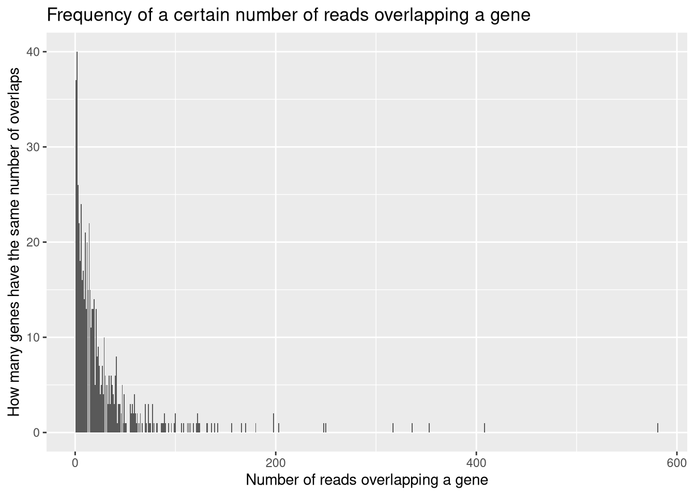
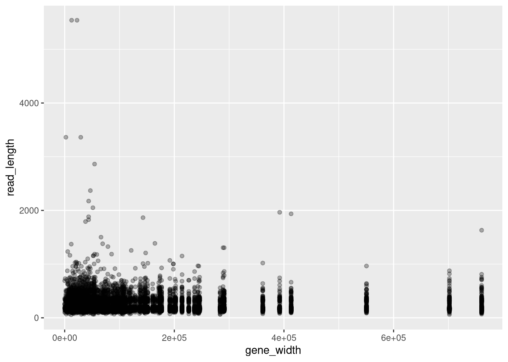
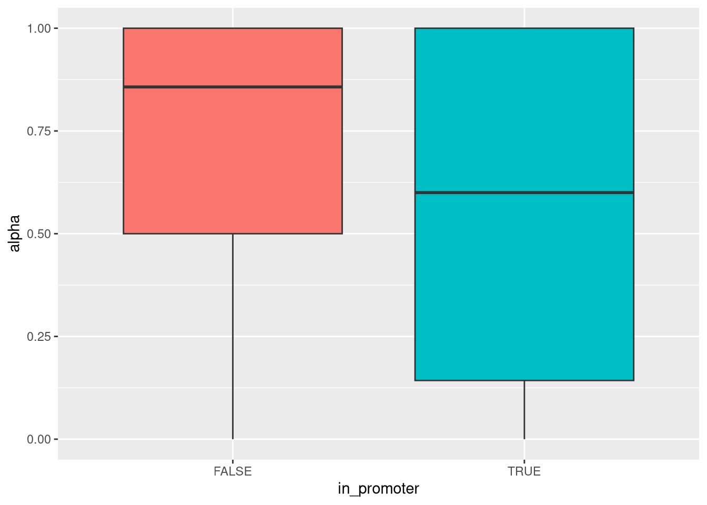
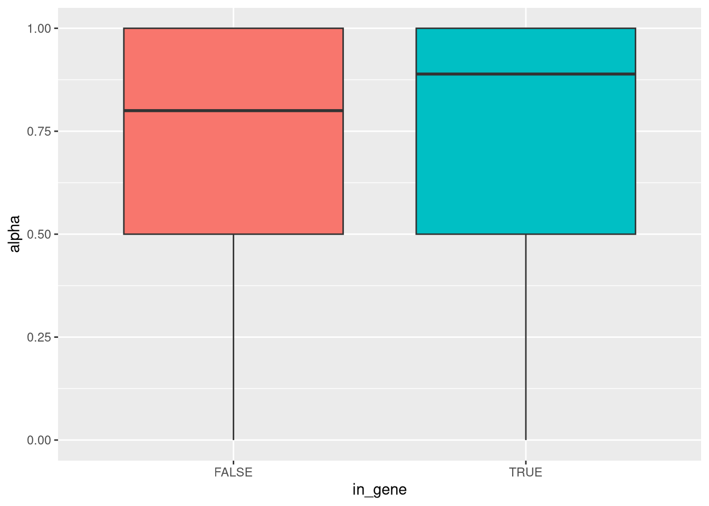
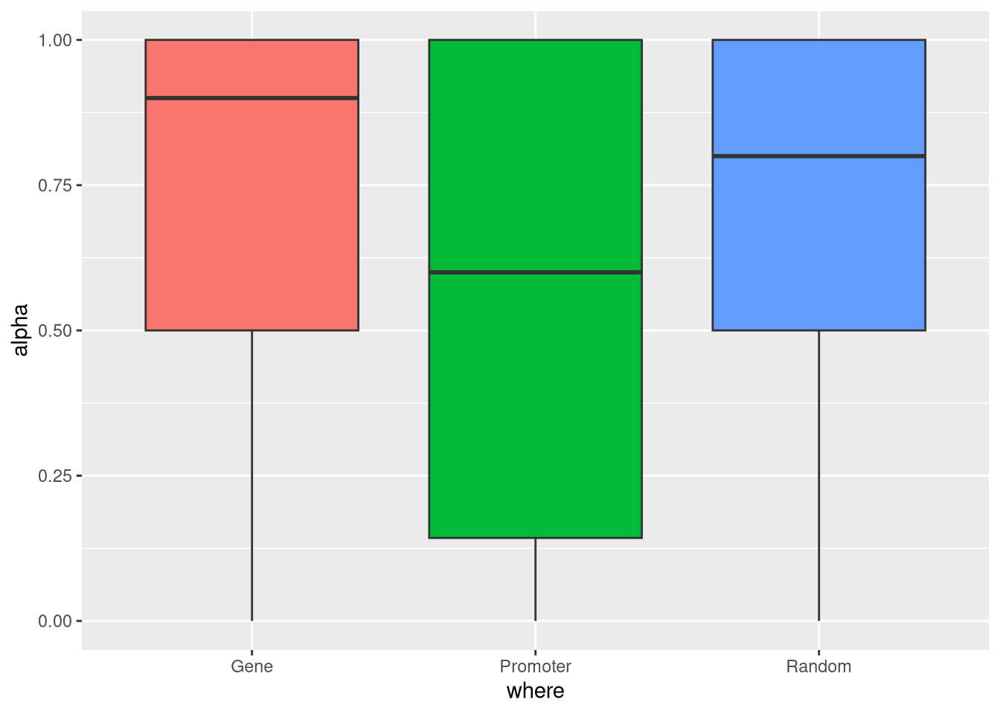

Last updated: 2025-08-15
Checks: 7 0
Knit directory: methyl_nano_cf/
This reproducible R Markdown analysis was created with workflowr (version 1.7.1). The Checks tab describes the reproducibility checks that were applied when the results were created. The Past versions tab lists the development history.
Great! Since the R Markdown file has been committed to the Git repository, you know the exact version of the code that produced these results.
Great job! The global environment was empty. Objects defined in the global environment can affect the analysis in your R Markdown file in unknown ways. For reproduciblity it’s best to always run the code in an empty environment.
The command set.seed(20250606) was run prior to running
the code in the R Markdown file. Setting a seed ensures that any results
that rely on randomness, e.g. subsampling or permutations, are
reproducible.
Great job! Recording the operating system, R version, and package versions is critical for reproducibility.
Nice! There were no cached chunks for this analysis, so you can be confident that you successfully produced the results during this run.
Great job! Using relative paths to the files within your workflowr project makes it easier to run your code on other machines.
Great! You are using Git for version control. Tracking code development and connecting the code version to the results is critical for reproducibility.
The results in this page were generated with repository version 54baa35. See the Past versions tab to see a history of the changes made to the R Markdown and HTML files.
Note that you need to be careful to ensure that all relevant files for
the analysis have been committed to Git prior to generating the results
(you can use wflow_publish or
wflow_git_commit). workflowr only checks the R Markdown
file, but you know if there are other scripts or data files that it
depends on. Below is the status of the Git repository when the results
were generated:
Ignored files:
Ignored: .Rhistory
Ignored: .Rproj.user/
Ignored: renv.lock
Ignored: renv/
Unstaged changes:
Modified: .gitignore
Modified: analysis/00_ObtainData.Rmd
Modified: analysis/healthyVsLuad.Rmd
Modified: analysis/modkitOutputToReadFormat.Rmd
Modified: analysis/other_files.Rmd
Modified: analysis/testingKnowncfDNAFeatures.Rmd
Note that any generated files, e.g. HTML, png, CSS, etc., are not included in this status report because it is ok for generated content to have uncommitted changes.
These are the previous versions of the repository in which changes were
made to the R Markdown
(analysis/exploratory_plots_genes.Rmd) and HTML
(docs/exploratory_plots_genes.html) files. If you’ve
configured a remote Git repository (see ?wflow_git_remote),
click on the hyperlinks in the table below to view the files as they
were in that past version.
| File | Version | Author | Date | Message |
|---|---|---|---|---|
| Rmd | 54baa35 | caitlinpage | 2025-08-15 | wflow_publish("analysis/exploratory_plots_genes.Rmd") |
| Rmd | 7b05846 | caitlinpage | 2025-08-14 | moved file |
library(plyranges)Loading required package: BiocGenerics
Attaching package: 'BiocGenerics'The following objects are masked from 'package:stats':
IQR, mad, sd, var, xtabsThe following objects are masked from 'package:base':
anyDuplicated, aperm, append, as.data.frame, basename, cbind,
colnames, dirname, do.call, duplicated, eval, evalq, Filter, Find,
get, grep, grepl, intersect, is.unsorted, lapply, Map, mapply,
match, mget, order, paste, pmax, pmax.int, pmin, pmin.int,
Position, rank, rbind, Reduce, rownames, sapply, saveRDS, setdiff,
table, tapply, union, unique, unsplit, which.max, which.minLoading required package: IRangesLoading required package: S4VectorsLoading required package: stats4
Attaching package: 'S4Vectors'The following object is masked from 'package:utils':
findMatchesThe following objects are masked from 'package:base':
expand.grid, I, unnameLoading required package: GenomicRangesLoading required package: GenomeInfoDbWarning: replacing previous import 'S4Arrays::makeNindexFromArrayViewport' by
'DelayedArray::makeNindexFromArrayViewport' when loading 'SummarizedExperiment'
Attaching package: 'plyranges'The following object is masked from 'package:IRanges':
sliceThe following object is masked from 'package:stats':
filterlibrary(dplyr)
Attaching package: 'dplyr'The following objects are masked from 'package:plyranges':
between, n, n_distinctThe following objects are masked from 'package:GenomicRanges':
intersect, setdiff, unionThe following object is masked from 'package:GenomeInfoDb':
intersectThe following objects are masked from 'package:IRanges':
collapse, desc, intersect, setdiff, slice, unionThe following objects are masked from 'package:S4Vectors':
first, intersect, rename, setdiff, setequal, unionThe following objects are masked from 'package:BiocGenerics':
combine, intersect, setdiff, unionThe following objects are masked from 'package:stats':
filter, lagThe following objects are masked from 'package:base':
intersect, setdiff, setequal, unionlibrary(ggplot2)
library("TxDb.Hsapiens.UCSC.hg38.knownGene")Loading required package: GenomicFeaturesLoading required package: AnnotationDbiLoading required package: BiobaseWelcome to Bioconductor
Vignettes contain introductory material; view with
'browseVignettes()'. To cite Bioconductor, see
'citation("Biobase")', and for packages 'citation("pkgname")'.
Attaching package: 'AnnotationDbi'The following object is masked from 'package:dplyr':
selectThe following object is masked from 'package:plyranges':
selectepiread_format <- readRDS("/researchers/caitlin.page/cf_nano/r_output/epiread_format.rds")
epiread_format$chrom <- epiread_format$seqnames
head(epiread_format) read_id chrom alignment_start alignment_end
1 7f095597-d2c5-47a2-93aa-d84b7f9abc94 chr22 10521100 10521455
2 e9abf215-8192-48f4-a50f-ef92241e5de3 chr22 10522473 10522658
3 4203dd9d-9bff-4d14-b046-7716315e9699 chr22 10524645 10524786
4 baf45276-b37b-43fd-8a33-6727de6255fa chr22 10527072 10527210
5 a75ce5a8-42f2-4fe2-b62b-35aba109507d chr22 10529269 10529453
6 b5e822b7-e149-4ae2-8937-fe4d570a274e chr22 10534032 10534204
read_length num_cg meth_pattern seqnames start end width
1 355 1 T chr22 10521100 10521455 356
2 185 4 CCTT chr22 10522473 10522658 186
3 141 1 T chr22 10524645 10524786 142
4 138 17 CCCCCCCCCCCCCCCCC chr22 10527072 10527210 139
5 184 2 TT chr22 10529269 10529453 185
6 172 2 TT chr22 10534032 10534204 173
index_cg cpg_positions
1 48 48
2 53 53,54,55,56
3 68 68
4 299 299,300,301,302,303,304,305,306,307,308,309,310,311,312,313,314,315
5 374 374,375
6 408 408,409
genom_positions
1 10521180
2 10522481,10522501,10522591,10522649
3 10524771
4 10527071,10527087,10527090,10527093,10527108,10527114,10527116,10527119,10527130,10527136,10527138,10527153,10527156,10527172,10527189,10527191,10527194
5 10529326,10529356
6 10534125,10534167
num_meth total alpha
1 0 1 0.0
2 2 4 0.5
3 0 1 0.0
4 17 17 1.0
5 0 2 0.0
6 0 2 0.0genes <- genes(TxDb.Hsapiens.UCSC.hg38.knownGene) 2162 genes were dropped because they have exons located on both strands
of the same reference sequence or on more than one reference sequence,
so cannot be represented by a single genomic range.
Use 'single.strand.genes.only=FALSE' to get all the genes in a
GRangesList object, or use suppressMessages() to suppress this message.genes %>% data.frame() %>% filter(seqnames == "chr22") %>% nrow()[1] 680#colnames(epiread_format)[2:4] <- c("seqnames", "start", "end")
epiread_format$read_start <- epiread_format$start
epiread_format$read_end <- epiread_format$endepiread_and_genes <- plyranges::find_overlaps(genes, plyranges::as_granges(epiread_format)) %>% data.frame()
colnames(epiread_and_genes)[2:5] <- c("gene_start", "gene_end", "gene_width", "gene_strand")
epiread_and_genes <- epiread_and_genes[,c(1,19:20,2:18)]epiread_and_genes %>% group_by(gene_id) %>% summarise(n=n()) %>%
ggplot(aes(x = n)) +
geom_bar() +
labs(title = "Frequency of a certain number of reads overlapping a gene",
x = "Number of reads overlapping a gene",
y = "How many genes have the same number of overlaps")
epiread_and_genes %>%
ggplot(aes(x = gene_width, y = read_length)) +
geom_point(alpha = 0.3)
head(epiread_and_genes) seqnames alpha read_start gene_start gene_end gene_width gene_strand
1 chr22 1 29333114 29333158 29333267 110 -
2 chr22 1 25104964 25102433 25112692 10260 -
3 chr22 1 25105488 25102433 25112692 10260 -
4 chr22 1 25108649 25102433 25112692 10260 -
5 chr22 0 25109660 25102433 25112692 10260 -
6 chr22 1 25110258 25102433 25112692 10260 -
gene_id read_id chrom alignment_start
1 100113380 fa8c31c6-71d4-4767-a55f-c63cfd2b2796 chr22 29333114
2 100128531 38c9b90a-a4ce-4a6a-8e9a-17851e7f6ae6 chr22 25104964
3 100128531 6299f86a-6767-4a43-b859-4180338d5e5a chr22 25105488
4 100128531 1ac644c9-d328-4f43-a7b3-930c2e9da7ca chr22 25108649
5 100128531 621314b5-60fa-4939-b31a-fbd4056ac2cf chr22 25109660
6 100128531 db1fbbcd-47fe-43bb-ace0-843c25c67dfd chr22 25110258
alignment_end read_length num_cg meth_pattern index_cg cpg_positions
1 29333295 181 2 CC 258624 258624,258625
2 25105125 161 3 CCC 207131 207131,207132,207133
3 25105611 123 1 C 207140 207140
4 25109034 385 3 CCC 207175 207175,207176,207177
5 25109995 335 2 TT 207194 207194,207195
6 25110431 173 2 CC 207198 207198,207199
genom_positions num_meth total
1 29333119,29333217 2 2
2 25104984,25105054,25105114 3 3
3 25105588 1 1
4 25108841,25108870,25109023 3 3
5 25109897,25109915 0 2
6 25110342,25110373 2 2c(overlap_genes = length(unique(epiread_and_genes$gene_id)),
total_genes = length(unique(filter(genes, seqnames == "chr22")$gene_id)),
prop_genes = length(unique(epiread_and_genes$gene_id))/length(unique(filter(genes, seqnames == "chr22")$gene_id)))overlap_genes total_genes prop_genes
609.0000000 680.0000000 0.8955882 c(overlap_reads = length(unique(epiread_and_genes$read_id)),
total_reads = length(unique(epiread_format$read_id)),
prop_reads = length(unique(epiread_and_genes$read_id))/length(unique(epiread_format$read_id)))overlap_reads total_reads prop_reads
1.605000e+04 2.666500e+04 6.019126e-01 I only have start and end gene coords from the TxDb file
Let’s fake some promoter coordinates from this
1kb in front of start, to 500bp after start
strand dependent: so if strand is negative it’s based around the end coordinate
genes_22 <- genes %>% data.frame() %>% filter(seqnames == "chr22")
genes_22_promoter <- genes_22 %>% mutate(start = ifelse(strand == "+", start - 1000, end - 500),
end = ifelse(strand == "+", start + 1500, end + 1000),
width = end - start + 1)epireads_and_promoters_1500 <- plyranges::find_overlaps(plyranges::as_granges(epiread_format), plyranges::as_granges(genes_22_promoter)) %>% data.frame()epiread_format %>% mutate(in_promoter = ifelse(read_id %in% epireads_and_promoters_1500$read_id, TRUE, FALSE)) %>%
ggplot(aes(x = in_promoter, y = alpha, fill = in_promoter)) +
geom_boxplot() +
theme(legend.position = "none")
epiread_format %>% mutate(in_gene = ifelse(read_id %in% epiread_and_genes$read_id, TRUE, FALSE)) %>%
ggplot(aes(x = in_gene, y = alpha, fill = in_gene)) +
geom_boxplot() +
theme(legend.position = "none") * this is useful * lower methylation in overlap than in gene body - good b/c we know that gene bodies should be methylated
epiread_format %>% mutate(where = ifelse(read_id %in% epiread_and_genes$read_id, "Gene", "Random"),
where = ifelse(read_id %in% epireads_and_promoters_1500$read_id, "Promoter", where)) %>%
ggplot(aes(x = where, y = alpha, fill = where)) +
geom_boxplot() +
theme(legend.position = "none")
sessionInfo()R version 4.4.1 (2024-06-14)
Platform: x86_64-pc-linux-gnu
Running under: Red Hat Enterprise Linux 9.5 (Plow)
Matrix products: default
BLAS/LAPACK: FlexiBLAS OPENBLAS-OPENMP; LAPACK version 3.9.0
locale:
[1] LC_CTYPE=en_AU.UTF-8 LC_NUMERIC=C
[3] LC_TIME=en_AU.UTF-8 LC_COLLATE=en_AU.UTF-8
[5] LC_MONETARY=en_AU.UTF-8 LC_MESSAGES=en_AU.UTF-8
[7] LC_PAPER=en_AU.UTF-8 LC_NAME=C
[9] LC_ADDRESS=C LC_TELEPHONE=C
[11] LC_MEASUREMENT=en_AU.UTF-8 LC_IDENTIFICATION=C
time zone: Australia/Melbourne
tzcode source: system (glibc)
attached base packages:
[1] stats4 stats graphics grDevices utils datasets methods
[8] base
other attached packages:
[1] TxDb.Hsapiens.UCSC.hg38.knownGene_3.20.0
[2] GenomicFeatures_1.58.0
[3] AnnotationDbi_1.68.0
[4] Biobase_2.66.0
[5] ggplot2_3.5.2
[6] dplyr_1.1.4
[7] plyranges_1.26.0
[8] GenomicRanges_1.58.0
[9] GenomeInfoDb_1.42.3
[10] IRanges_2.40.1
[11] S4Vectors_0.44.0
[12] BiocGenerics_0.52.0
[13] workflowr_1.7.1
loaded via a namespace (and not attached):
[1] tidyselect_1.2.1 blob_1.2.4
[3] farver_2.1.2 Biostrings_2.74.1
[5] bitops_1.0-9 fastmap_1.2.0
[7] RCurl_1.98-1.17 GenomicAlignments_1.42.0
[9] promises_1.3.3 XML_3.99-0.18
[11] digest_0.6.37 lifecycle_1.0.4
[13] KEGGREST_1.46.0 processx_3.8.6
[15] RSQLite_2.4.2 magrittr_2.0.3
[17] compiler_4.4.1 rlang_1.1.6
[19] sass_0.4.10 tools_4.4.1
[21] yaml_2.3.10 rtracklayer_1.66.0
[23] knitr_1.50 labeling_0.4.3
[25] S4Arrays_1.6.0 bit_4.6.0
[27] curl_6.4.0 DelayedArray_0.32.0
[29] RColorBrewer_1.1-3 abind_1.4-8
[31] BiocParallel_1.40.2 withr_3.0.2
[33] grid_4.4.1 git2r_0.36.2
[35] scales_1.4.0 SummarizedExperiment_1.36.0
[37] cli_3.6.5 rmarkdown_2.29
[39] crayon_1.5.3 generics_0.1.4
[41] rstudioapi_0.17.1 httr_1.4.7
[43] rjson_0.2.23 DBI_1.2.3
[45] cachem_1.1.0 stringr_1.5.1
[47] zlibbioc_1.52.0 parallel_4.4.1
[49] XVector_0.46.0 restfulr_0.0.16
[51] matrixStats_1.5.0 vctrs_0.6.5
[53] Matrix_1.7-0 jsonlite_2.0.0
[55] callr_3.7.6 bit64_4.6.0-1
[57] jquerylib_0.1.4 glue_1.8.0
[59] codetools_0.2-20 ps_1.9.1
[61] stringi_1.8.7 gtable_0.3.6
[63] later_1.4.2 BiocIO_1.16.0
[65] UCSC.utils_1.2.0 tibble_3.3.0
[67] pillar_1.11.0 htmltools_0.5.8.1
[69] GenomeInfoDbData_1.2.13 R6_2.6.1
[71] rprojroot_2.1.0 evaluate_1.0.4
[73] lattice_0.22-6 png_0.1-8
[75] Rsamtools_2.22.0 memoise_2.0.1
[77] httpuv_1.6.16 bslib_0.9.0
[79] Rcpp_1.1.0 SparseArray_1.6.2
[81] whisker_0.4.1 xfun_0.52
[83] fs_1.6.6 MatrixGenerics_1.18.1
[85] getPass_0.2-4 pkgconfig_2.0.3